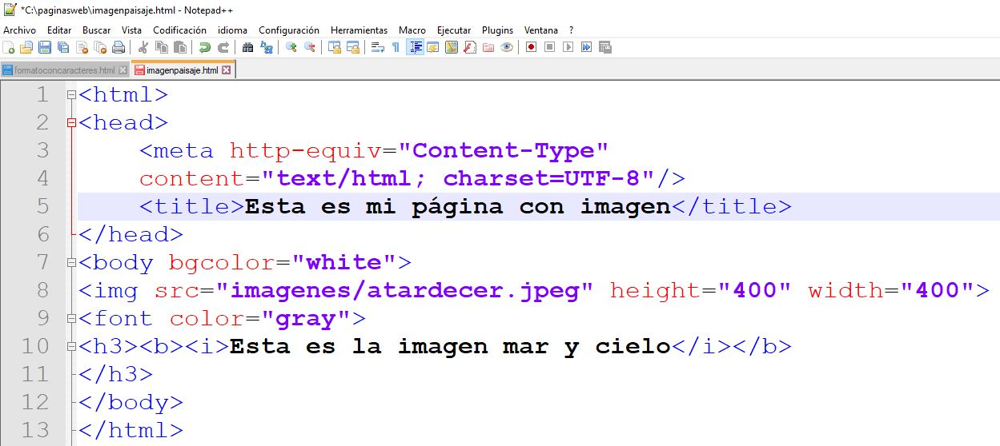

Etiquetas Básicas de HTML.
Las etiquetas HTML son fragmentos de código que permiten crear elementos HTML, estructuras
básicas del
lenguaje de programación HTML en el que se escriben las páginas web porque es el que entienden
los
navegadores.
El formato de una etiqueta HTML es un bloque de texto encerrado entre corchetes angulares <>, y
cada
elemento HTML tiene una etiqueta de inicio del tipo

etiquetas html
Lista de etiquetas HTML.
La siguiente, es una lista que relaciona las etiquetas utilizadas en elementos de HTML5.
Elemento raíz:
- <!doctype html> Define que el documento esta bajo el estandar de HTML 5
- <html> Representa la raíz de un documento HTML o XHTML y le indica al navegador
que lo
que
viene a continuación debe ser interpretado como código HTML
Metadatos del documento:
- <head> Cabecera del documento HTML. Representa una colección de metadatos acerca
del
documento, incluyendo enlaces y definiciones de scripts y hojas de estilo.
- <title> Define el título del documento, que se muestra en la barra de título del
navegador o
en las pestañas de página. Solamente puede contener texto y cualquier otra etiqueta
contenida no
será interpretada.
- <base> Define la URL base para las URLs relativas en la página.
- <link> Usada para enlazar JavaScript y CSS externos con el documento HTML actual.
- <meta> Define los metadatos que no pueden ser definidos usando otro elemento
HTML.
- <style> Etiqueta de estilo usada para escribir CSS en línea.
Secuencias de comandos:
- <script> Define ya sea un script interno o un enlace hacia un script externo. El
lenguaje de
programación es JavaScript
- <noscript> Define un contenido alternativo a mostrar cuando el navegador no
soporta
scripting.
Secciones:
- <body> Incluye el contenido principal de un documento HTML. Solo hay un elemento
<body>
en un documento
- <section> Define una sección en un documento.
- <nav> Define una sección que solamente contiene enlaces de navegación.
- <article> Define contenido autónomo que podría existir independientemente del
resto
del
contenido.
- <aside> Define algunos contenidos vagamente relacionados con el resto del
contenido de
la
página. Si es removido, el contenido restante seguirá teniendo sentido.
- <h1> <h2> <h3> <h4> <h5> <h6> Los elemento de
cabecera
implementan seis niveles de cabeceras de documentos; <h1> es la de mayor y
<h6>
es la de
menor impotancia. Un elemento de cabecera describe brevemente el tema de la sección que
introduce.
- <header> Define la cabecera de una página o sección. Usualmente contiene un
logotipo,
el
título del sitio Web y una tabla de navegación de contenidos.
- <footer> Define el pie de una página o sección. Usualmente contiene un mensaje de
derechos de
autoría, algunos enlaces a información legal o direcciones para dar información de
retroalimentación.
- <address> Define una sección que contiene información de contacto.
- <main> Define el contenido principal o importante en el documento. Solamente
existe un
elemento <main>en el documento.
Agrupación de contenido:
- <p> Define una parte que debe mostrarse como un párrafo.
- <hr> Introduce una separción entre parrafos de una sección o articulo o cualquier
contenido.
- <pre> Indica que su contenido esta preformateado y que este formato debe ser
preservado.
- <blockquote> Incluye un contenido citado desde otra fuente.
- <ol> Define una lista ordenada de artículos.
- <ul> Define una lista de artículos sin orden.
- <li> Define un artículo de una lista ennumerada.
- <dl> Define una lista de definiciones, es decir, una lista de términos y sus
definiciones
asociadas.
- <dt> Representa un término definido por el siguiente <dd>.
- <dd> Representa la definición de los terminos listados antes que él.
- <figure> Representa una figura ilustrada como parte del documento.
- <figcaption> Representa la leyenda de una figura.
- <div> Incluye un contenedor genérico sin ningún significado especial.
Semántica a nivel de texto:
- <a> Incluye un hiperenlace, enlazando a otro recurso.
- <em> Incluye un texto enfatizado, como un acento de intensidad.
- <strong> Incluye un texto especialmente importante.
- <small> Incluye un comentario aparte, es decir, textos como un descargo de
responsabilidad o
una nota de derechos de autoría.
- <s> Incluye contenido que ya no es exacto o relevante.
- <cite> Incluye el título de una obra.
- <q> Incluye una cita textual inline.
- <dfn> Incluye un término cuya definición está contenida en su ancestro más
próximo.
- <abbr>Representa una abreviación o un acrónimo; la expansión de la abreviatura
puede
ser
representada por el atributo title.
- <data> Asocia un equivalente legible por máquina a sus contenidos.
- <time> Incluye un valor de fecha y hora; el equivalente legible por máquina puede
ser
representado en el atributo datetime.
- <code> Incluye un código de ordenador.
- <var> Incluye a una variable.
- <samp> Representa la salida de un programa o un ordenador.
- <kbd> Representa la entrada de usuario, por lo general desde un teclado, pero no
necesariamente.
- <sub> <sup> Representan un subíndice y un superíndice, respectivamente.
- <i> Representa un texto en una voz o estado de ánimo alterno, o por lo menos de
diferente
calidad.
- <b> Incluye un texto hacia el cual se llama la atención para propósitos
utilitaros.
- <u>Representa una anotación no textual sin-articular, como etiquetar un texto como
mal
escrito
o etiquetar un nombre propio en texto en chino.
- <u>Representa una anotación no textual sin-articular, como etiquetar un texto como
mal
escrito
o etiquetar un nombre propio en texto en chino.
- <mark> Representa texto resaltado con propósitos de referencia, es decir por su
relevancia en
otro contexto.
- <ruby> Representa contenidos a ser marcados con anotaciones ruby, recorridos
cortos de
texto
presentados junto al texto.
- <rt> Representa el texto de una anotación ruby.
- <rp>Representa los paréntesis alrededor de una anotación ruby, usada para mostrar
la
anotación
de manera alterna por los navegadores que no soporten despliegue estandar para las
anotaciones.
- <bdi> Representa un texto que debe ser aislado de sus alrededores para el
formateado
bidireccional del texto. Permite incrustar un fragmento de texto con una direccionalidad
diferente o
desconocida.
- <bdo> Representa la direccionalidad de sus descendientes con el fin de anular de
forma
explícita al algoritmo bidireccional Unicode.
- <span> Representa texto sin un significado específico. Este debe ser usado cuando
ningún otro
elemento semántico le confiere un significado adecuado, en cuyo caso, provendrá de
atributos
globales como class, lang, o dir.
- <br> Representa un salto de línea.
- <wbr> Representa una oportunidad de salto de línea, es decir, un punto sugerido de
envoltura
donde el texto de múltiples líneas puede ser dividido para mejorar su legibilidad.
Ediciones:
- <ins> Define una adición en el documento.
- <del> Define una remoción del documento.
Contenido incrustado:
- <img> Representa una imagen.
- <iframe> Representa un contexto anidado de navegación, es decir, un documento HTML
embebido.
- <embed> Representa un punto de integración para una aplicación o contenido
interactivo
externo
que por lo general no es HTML.
- <object> Representa un recurso externo, que será tratado como una imagen, un
sub-documento
HTML o un recurso externo a ser procesado por un plugin.
- <param> Define parámetros para el uso por los plugins invocados por los elementos
<object>.
- <video> Representa un video, y sus archivos de audio y capciones asociadas, con la
interfaz
necesaria para reproducirlos.
- <audio> Representa un sonido o stream de audio.
- <source> Permite a autores especificar recursos multimedia alternativos para los
elementos
multimedia como <video> o <audio>.
- <track> Permite a autores especificar una pista de texto temporizado para
elementos
multimedia
como <video> o <audio>.
- <canvas> Representa un área de mapa de bits en el que se pueden utilizar scripts
para
renderizar gráficos como gráficas, gráficas de juegos o cualquier imagen visual al
vuelo.
- <map> En conjunto con <area>, define un mapa de imagen.
- <area> En conjunto con <map>, define un mapa de imagen.
- <svg> Define una imagen vectorial embebida.
- <math> Define una fórmula matemática.
Tablas:
- <table> Incluye datos con más de una dimensión.
- <caption> Incluye el título de una tabla.
- <colgroup> Incluye un conjunto de una o más columnas de una tabla.
- <col> Incluye una columna de una tabla.
- <tbody> Incluye el bloque de filas que describen los datos contretos de una tabla.
- <thead> Incluye el bloque de filas que describen las etiquetas de columna de una
tabla.
- <tfoot> Incluye los bloques de filas que describen los resúmenes de columna de una
tabla.
- <tr> Incluye una fila de celdas en una tabla.
- <td> Incluye una celda de datos en una tabla.
- <th> Incluye una celda encabezada en una tabla.
Formularios:
- <form> Incluye un formulario, consistendo de controles que puede ser enviado a un
servidor
para procesamiento.
- <fieldset> Incluye un conjunto de controles.
- <legend> Incluye el título de un <fieldset>.
- <label> Incluye el título de un control de formulario.
- <input> Incluye un campo de datos escrito que permite al usuario editar los datos.
- <button> Incluye un botón.
- <select> Incluye un control que permite la selección entre un conjunto de
opciones.
- <datalist> Incluye un conjunto de opciones predefiniddas para otros controles.
- <optgroup> Incluye un conjunto de opciones, agrupadas lógicamente.
- <option> Incluye una opción en un elemento <select>, o una sugerencia de un
elemento
<datalist>.
- <textarea> Incluye un control de edición de texto multi-línea.
- <keygen> Incluye un control de par generador de llaves.
- <output> Incluye el resultado de un cálculo.
- <progress> Incluye el progreso de finalización de una tarea.
- <meter> Incluye la medida escalar (o el valor fraccionario) dentro de un rango
conocido.
Elementos interactivos:
- <details> Incluye un widget desde el que un usuario puede obtener información o
controles
adicionales.
- <summary> Incluye un resumen, título o leyenda para un elemento <details>
dado.
- <command> Incluye un comando que un usuario puede invocar.
- <menu> Incluye una lista de comandos.
Referencias:
López, M. (n.d.). Qué son las etiquetas HTML? Master SEO
SEM. Retrieved October 24, 2022, from
https://www.masterseosem.com/diccionario-seo-glosario-de-terminos-de-marketing-digital/etiquetas-html
Atributos de estilo en HTML. (2017, 12 agosto). unam.mx. http://uapas2.bunam.unam.mx/mtm/insercion_de_imagenes/images/img_37.jpg